Welcome To
Isaac Media
We specialise in Photography and videography for weddings, families, celebrations, professionals and brands.
Based in Pretoria, South Africa
Available nationwide and internationally
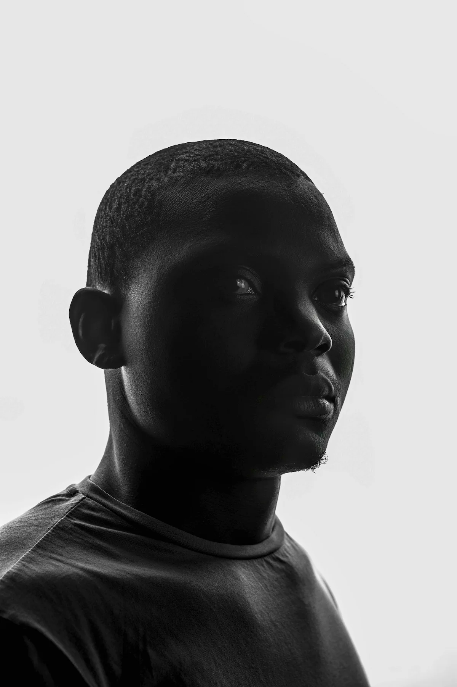
About Isaac Media
Isaac Media
Isaac Media is a creative visual brand founded by Isaac Ngobeni, a passionate photographer and videographer dedicated to capturing life's most meaningful moments with authenticity and excellence.
With over 10 years of experience in videography, 4 years in video editing, and 4 years in professional photography, Isaac brings a unique storytelling approach shaped by his journey behind the camera.
Read More →Wedding Packages
Isaac Media

We Also Shoot
Isaac Media
- Events
- Graduations
- Families
- Portraits
- Medical Professionals
- Brands and Videos
Prefer to chat? You can also enquire directly via WhatsApp.
Gallery
Isaac Media
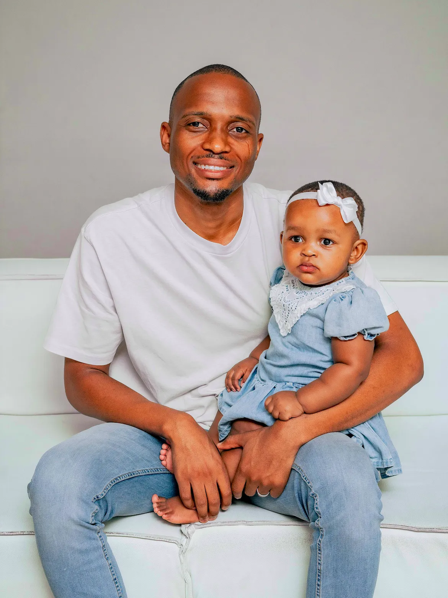
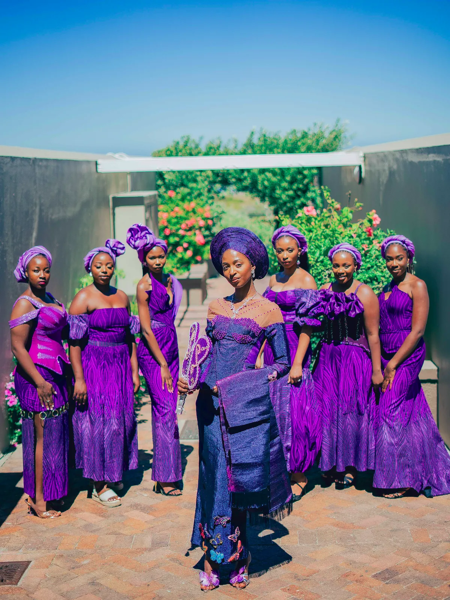
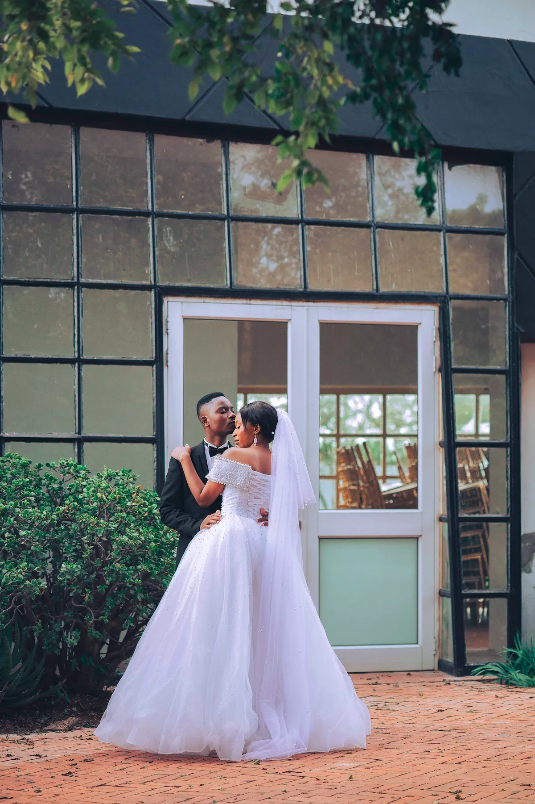
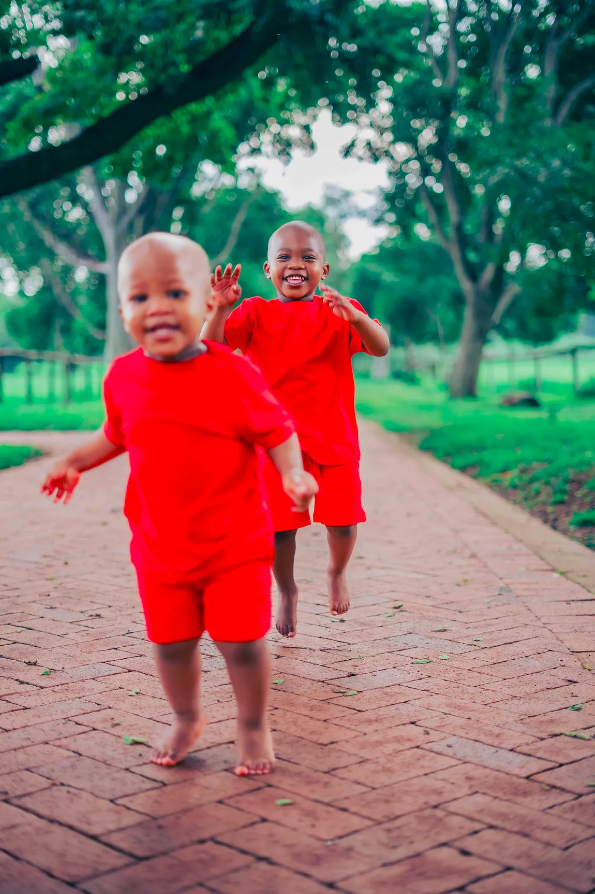
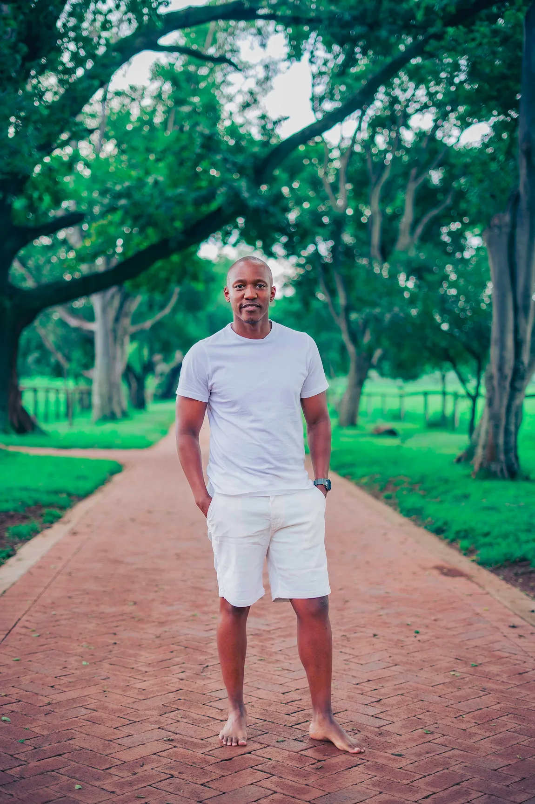
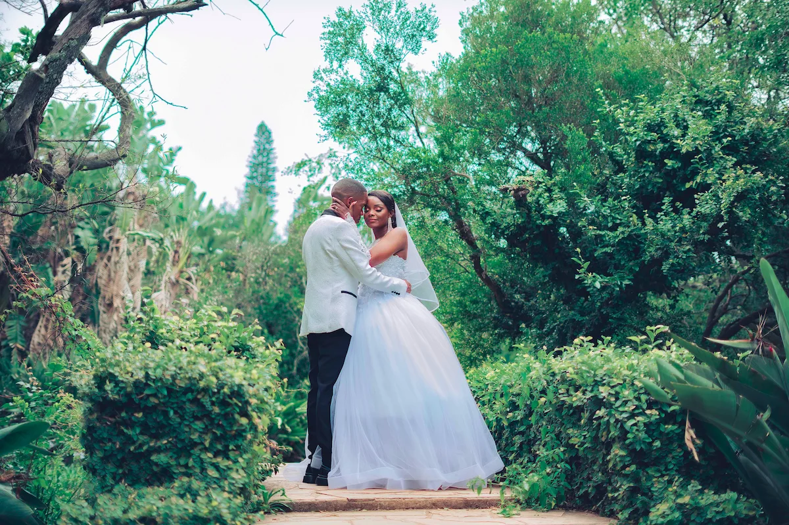
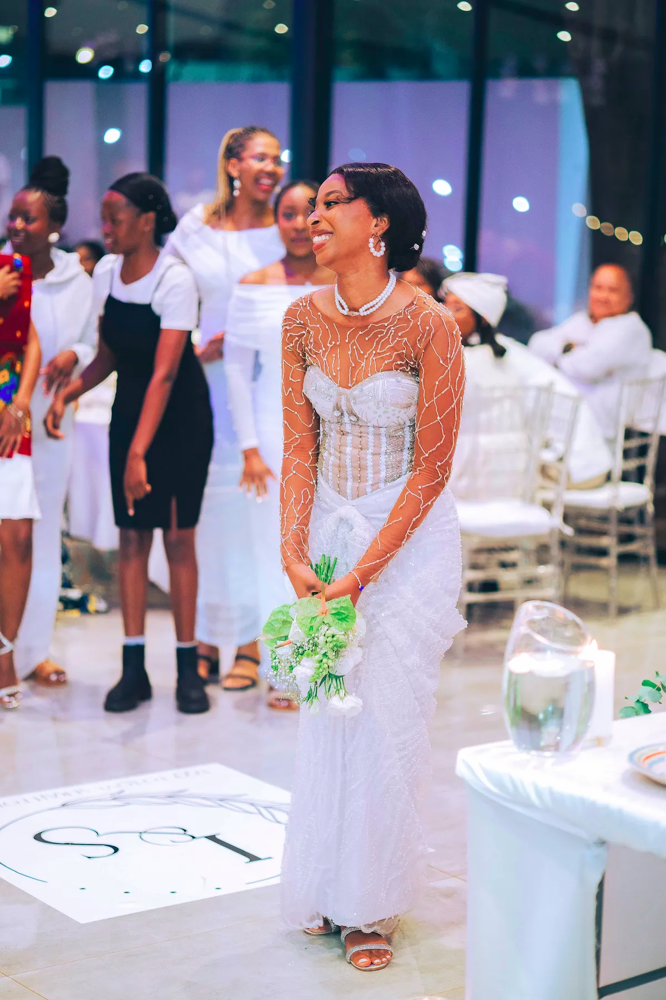
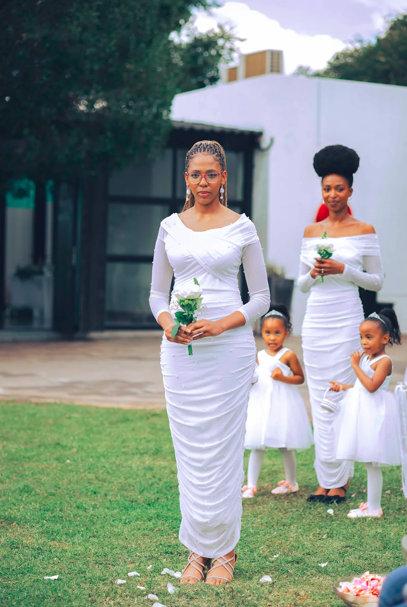
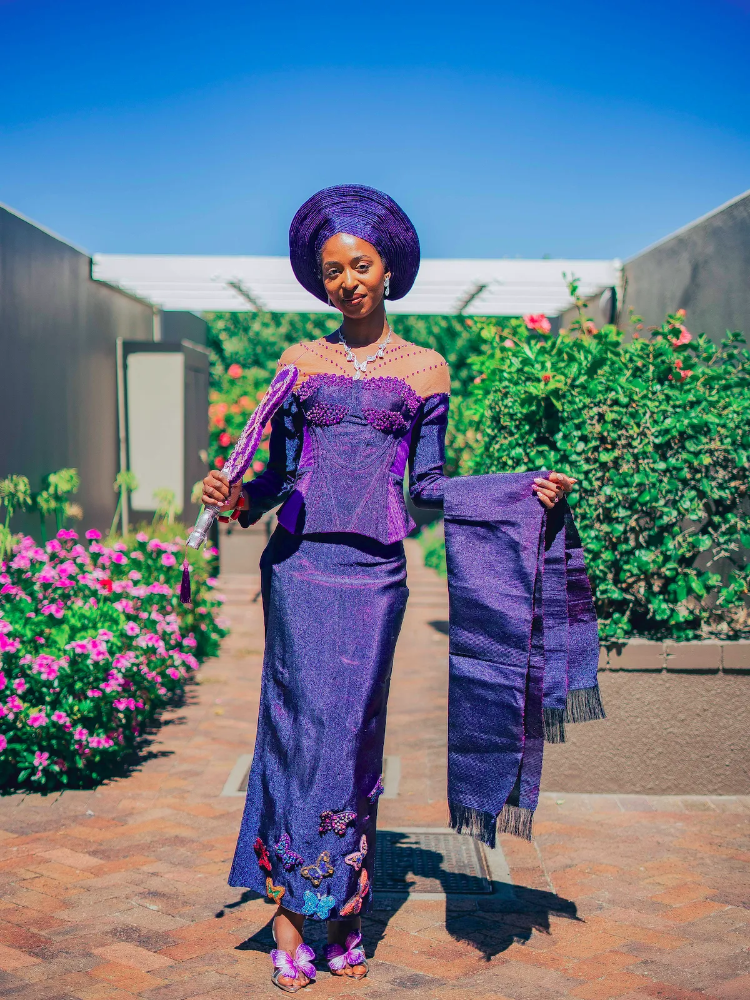
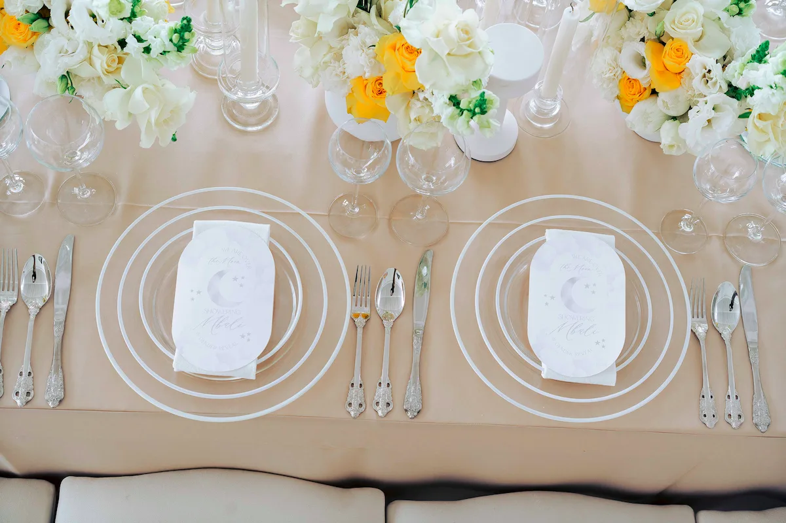
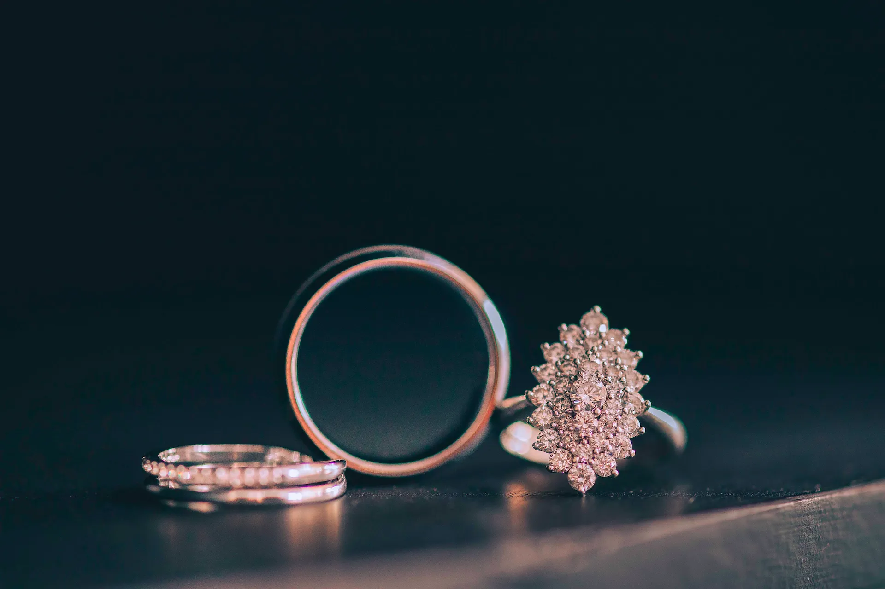
Kind Words
Stories from the people we photograph
Every story deserves to be told.
We’re gathering kind words from our clients. If we’ve photographed a special moment for you, we’d love to hear about your experience.
Share your experienceFrequently Asked Questions
Isaac Media
Get in Touch
Choose how you'd like to get started